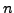

In AntiAlC mode, SIGSPEC does not follow a strict step-by-step prewhitening sequence. Instead, test runs are performed for a number of candidate peaks in the significance spectrum in order to find the solution that produces a minimum residual rms scatter after a user-given number of prewhitenings.
 , which has to attain a value in the interval
. If the highest sig in the considered frequency range is
, then the sig limit is
. I.e., the AntiAlC parameter determines the sig limit for the candidate peak selection relative to the highest peak in the spectrum under consideration. Alternatively or in addition, a sig threshold for the AntiAlC candidate selection may be defined using the keyword antialc:siglimit. If neither antialc:par nor antialc:siglimit are present, the sig limit specified by siglimit in the .ini file (p.
, which has to attain a value in the interval
. If the highest sig in the considered frequency range is
, then the sig limit is
. I.e., the AntiAlC parameter determines the sig limit for the candidate peak selection relative to the highest peak in the spectrum under consideration. Alternatively or in addition, a sig threshold for the AntiAlC candidate selection may be defined using the keyword antialc:siglimit. If neither antialc:par nor antialc:siglimit are present, the sig limit specified by siglimit in the .ini file (p. ) is used for the AntiAlC candidate selection also.
) is used for the AntiAlC candidate selection also.
According to Reegen (2007), the expected sig is approximately proportional to the squared amplitude, if all influences by the time-domain sampling are neglected. The combination of  sinusoidal signal components interacting via aliasing is expected to produce a maximum amplitude that does not exceed the sum of amplitudes of the sinusoidal components. Consequently, the square root of the sig of such a combination,
, is very likely below the sum of square roots of individual sigs
,
| (12) |
| (13) |
The AntiAlC mode produces additional screen output, if a combination of candidate peaks yields a lower residual scatter than the previous minimum, a two-line screen message is returned. The first line is a set of indices. In the example below, the AntiAlC parameter (keyword antialc:par) is set  , and the AntiAlC computation depth (keyword antialc:depth) is
, and the AntiAlC computation depth (keyword antialc:depth) is  . Correspondingly, the first line of output applies to the first of altogether ten candidate peaks in the first iteration, the first out of three in the second iteration, and the first out of seven in the third iteration. This peak constellation produces an rms deviation of residuals as displayed in the second line of output (in the example
). After finishing the test cascade, the number of iterations specified by the keyword antialc:adopt (in the present example, this number is
. Correspondingly, the first line of output applies to the first of altogether ten candidate peaks in the first iteration, the first out of three in the second iteration, and the first out of seven in the third iteration. This peak constellation produces an rms deviation of residuals as displayed in the second line of output (in the example
). After finishing the test cascade, the number of iterations specified by the keyword antialc:adopt (in the present example, this number is  ) is adopted for the main cascade. The screen output produced by the main cascade is the same as for a normal SIGSPEC prewhitening cascade without AntiAlC. The files containing spectra and residuals, respectively, are updated each time the residual rms deviation improves.
) is adopted for the main cascade. The screen output produced by the main cascade is the same as for a normal SIGSPEC prewhitening cascade without AntiAlC. The files containing spectra and residuals, respectively, are updated each time the residual rms deviation improves.
Example. The sample project antialc illustrates the anti-aliasing correction using the same sampling as the data for the sample project timeres (p.
The sample project antialc illustrates the anti-aliasing correction using the same sampling as the data for the sample project timeres (p. ),
),
The file alc.dat corresponds to the project directory alc, representing a normal SIGSPEC run without a file alc.ini. Running SigSpec alc, the resulting frequencies (screen output) are
1 freq 7.55917 sig 55.8792 rms 10.0617 csig 55.8792
2 freq 5.55706 sig 31.5539 rms 8.65888 csig 31.5539
3 freq 10.5668 sig 11.011 rms 7.81469 csig 11.011
4 freq 2.55231 sig 4.9934 rms 7.60001 csig 4.9934
Instead of the two signal components, 1-cycle-per-day aliases are identified. The significance and Fourier amplitude spectra of the dataset show the highest peak at 7.56 cycles per day, which represents a superposition of the first upper side peak of the signal at 6.56 cycles per day and the first lower side peak of the signal at 8.56 cycles per day (Fig.22. This leads to an imperfect prewhitening of the two components, and the remaining signal is detected as a third component at 9.56 cycles per day.
The alternative AntiAlC analysis is provided by the file antialc.ini, which contains the specifications
antialc:par 0.5
antialc:depth 2
antialc:adopt 1
antialc:siglimit 4
All peaks that reach at least 50% of the highest significance in the spectrum are taken into account. SIGSPEC computes two consecutive iterations, but adopts only the first of these two iterations. A sig limit of 4 is assumed for the AntiAlC calculations (contrary to the default sig limit of 5 still valid as a breakup condition for the whole procedure). Running SigSpec antialc, the screen output is
1 freq 8.56173 sig 51.5953 rms 10.0617 csig 51.5953
2 freq 6.55846 sig 46.0406 rms 8.77437 csig 46.0406
3 freq 33.7204 sig 3.9725 rms 7.48075 csig 3.9725
Both signals are recovered at a reasonable frequency accuracy. Moreover, according to the file antialc/result.dat, the amplitudes of the two signals are recovered to a satisfactory precision (7.22 mmag, 6.47 mmag).


Next: Analysis of Harmonics
Up: SigSpec User's Manual by
Previous: Time-resolved Analysis
Contents
Piet Reegen
2009-09-23